Next: mcdisp - the Calculation Up: mcdiff - calculate and Previous: Formalism II - Neutron Contents Index
Usually the magnetic form factor is calculated by the dipole approximation (see appendix J). In order to go beyond the dipole approximation (see [29] chapter 11.6.2,equations 11.141-11.143, mind: there is a small error in equ 11.141 and 11.142 in this book, see below) for the magnetic form factor it is necessary to take into account the expectation values 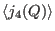 and 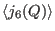 (in addition to 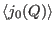 and 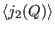). Moreover the ground state wave functions, the 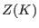-coefficients (see appendix K or [29],table 11.1) and the momentum quantum number for each magnetic ion is required. This information has to be given in the input file in the following format:
...
# %SECTION 4% DESCRIPTION OF MAGNETIC UNIT CELL AND LIST OF MAGNETIC ATOMS
#
#
# here follows the description of the magnetic unit cell with respect
# to the primitive crystallographic unit cell:
# 'nr1', 'nr2', 'nr3' ...the crystallographic unit cell has to be taken
# nr1 nr2 and nr3 times along r1 r2 and r3,
# respectively to get magnetic unit cell
# 'nat' denotes the number of magnetic atoms in magnetic unit cell
#
# Temperature, External Magnetic Field: Magnetic Unit Cell
#! T=1.3 K Ha=0 T Hb= 0 T Hc= 0 T: nr1=2 nr2=2 nr3=2 nat=8
#
#
# It follows a list of nat lines with to describe the magnetic moment configuration
# Notes:
# 'atom-filename' means the single ion property filename of this magnetic atom:
# -it must contain the Formfactor Coefficients (e.g. see international tables)
# Lande factor
# Neutron Scattering Length (10^-12 cm)
# -it may contain a Debey Waller Factor
# 'da' 'db' and 'dc' are not used by the program (unless you enter a line #! use_dadbdc=1)
# 'dr1','dr2' and 'dr3' refer to the primitive lattice given below
# 'Ma','Mb','Mc' denote the magnetic moment components in Bohr magnetons
# in case of non orthogonal lattices instead of Ma Mb Mc the components Mi Mj Mk
# have to be given, which refer to an right handed orthogonal coordinate system
# defined by j||b, k||(a x b) and i normal to k and j
# <Sa> <La> <Sb> <Lb > <Sc> <Lc> (optional) denote the spin and orbital angular momentum components
# 'Hxc1' 'Hxc2' 'Hxc3' (optional line, used to go beyond dipole approx for formfactor)
# denote the exchange fields in meV
#
#{atom-file} da[a] db[b] dc[c] dr1[r1] dr2[r2] dr3[r3] <Ma> <Mb> <Mc> [mb] [optional <Sa> <La> <Sb> <Lb > <Sc> <Lc>]
#{corresponding exchange fields Hxc [meV]- if passed to mcdiff only these are used for calculation (not the magnetic moments)}
{Ce3p.sipf} 0.00000 0.00000 0.00000 0.00000 0.00000 0.00000 +0.69590 +0.69620 +0.00000
corresponding exchange fields Hxc [meV]--> +0.58640 +0.58660 +0.00000
{Ce3p.sipf} 0.50000 0.50000 0.50000 0.00000 0.00000 1.00000 -0.69590 -0.69620 +0.00000
corresponding exchange fields Hxc [meV]--> -0.58640 -0.58660 +0.00000
{Ce3p.sipf} 0.00000 1.00000 0.00000 0.00000 1.00000 0.00000 -0.69590 -0.69620 +0.00000
corresponding exchange fields Hxc [meV]--> -0.58640 -0.58660 +0.00000
{Ce3p.sipf} 0.50000 1.50000 0.50000 0.00000 1.00000 1.00000 +0.69590 +0.69620 +0.00000
corresponding exchange fields Hxc [meV]--> +0.58640 +0.58660 +0.00000
{Ce3p.sipf} 1.00000 0.00000 0.00000 1.00000 0.00000 0.00000 -0.69590 -0.69620 +0.00000
corresponding exchange fields Hxc [meV]--> -0.58640 -0.58660 +0.00000
{Ce3p.sipf} 1.50000 0.50000 0.50000 1.00000 0.00000 1.00000 +0.69590 +0.69620 +0.00000
corresponding exchange fields Hxc [meV]--> +0.58640 +0.58660 +0.00000
{Ce3p.sipf} 1.00000 1.00000 0.00000 1.00000 1.00000 0.00000 +0.69590 +0.69620 +0.00000
corresponding exchange fields Hxc [meV]--> +0.58640 +0.58660 +0.00000
{Ce3p.sipf} 1.50000 1.50000 0.50000 1.00000 1.00000 1.00000 -0.69590 -0.69620 +0.00000
corresponding exchange fields Hxc [meV]--> -0.58640 -0.58660 +0.00000
Such a file can be easily created by using the program spins. Alternatively, if no complete mcphas model calculation is available, the meanfields can be varied such as to give a good fit to experimental data.
If such information is given the formalism used by mcdiff changes in the following way. (i) If possible, the expectation values of 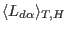 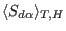 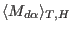 are evaluated by the module functions Lcalc, Scalc and mcalc, respectively. These values are used to calculate the neutron intensities in dipole approximation (Idip). (ii) For the full intensity calculation instead of equation (31) the magnetic structure factor 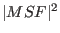 is calculated according to
| 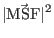 | 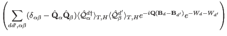 | (46) |
Here the thermal expectation values
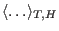
of the scattering operators
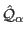 have to be evaluated
for each ion  . Note that the scattering operators correspond to the
Fourier transform of the atomic magnetisation density:
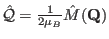.
If present in the single ion module, the function mq is called to calculate this quantity.
. Note that the scattering operators correspond to the
Fourier transform of the atomic magnetisation density:
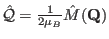.
If present in the single ion module, the function mq is called to calculate this quantity.
For example, for the single ion module so1ion the scattering operator
is calculated as follows (for ic1ion see section 15.6):
once the eigenstates of each ion are known in terms of
atomic wave functions 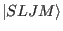 (with
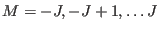) this
evaluation can be performed by means of the following expressions for
the matrix elements of the scattering operator (compare chapter 11.6.2
in [29],equations
11.141-11.143, mind: there is a small error in equation 11.141
and 11.142 in this reference - the imaginary  has been misplaced ... the following
equations have been corrected for this mistake):
has been misplaced ... the following
equations have been corrected for this mistake):
Here the different symbols have the following meaning:
The coefficients 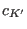 have been tabulated (see appendix K or table 11.1 of [29]) and have to be given in the single ion parameter file(s) by entering the following lines
# coefficients of Z(K') according to Lovesey chapter 11.6.1 page 233 Z1c0=1.63636364 Z1c2=2.95041322 Z3c2=-0.20896503 Z3c4=-0.25329095 Z5c4=0.03820789 Z5c6=0.14258681 Z7c6=-0.00614959
The
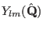 are the spherical harmonics evaluated for the direction of the
scattering vector with respect to the crystal field coordinate system  .
The factor 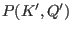 is defined in terms of 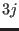-symbols.
.
The factor 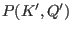 is defined in terms of 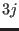-symbols.